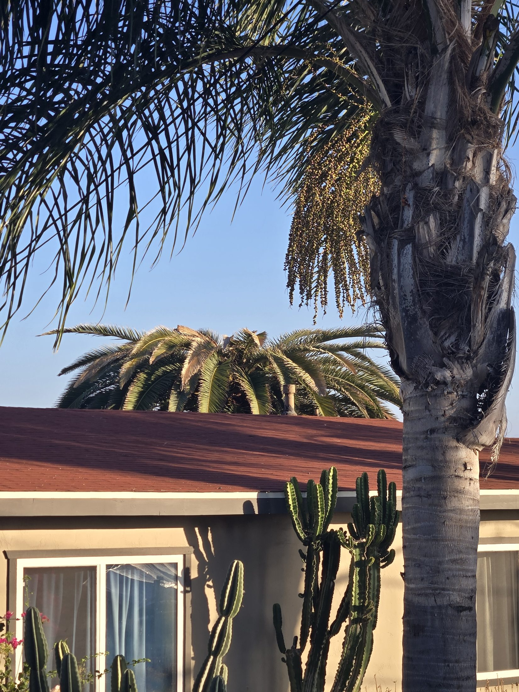
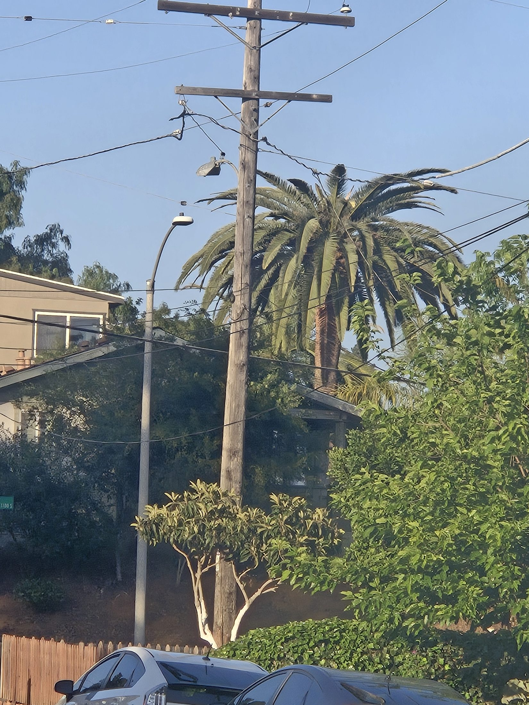

During local monitoring of my declining Canary Island Date Palm in Old Escondido, an adult South American Palm Weevil was observed on video walking up the trunk. The adult was captured afterward. The video documents the adult weevil observation, but it is not embedded here yet.
The still photos below provide context for the declining Canary Island Date Palm and nearby mature Canary Island Date Palms in Old Escondido. They should be understood as site and palm-condition context, not as standalone proof of South American Palm Weevil activity.
Not every declining palm has South American Palm Weevil activity, and nearby mature palms should not be assumed to be infested. This field note documents one observed adult weevil associated with one declining Canary Island Date Palm, while also showing the surrounding Old Escondido palm context.
Field Context From Old Escondido

Nearby mature Canary Island Date Palm context in the surrounding Old Escondido neighborhood.

Mature Canary Island Date Palm street context near residential and utility corridors in Old Escondido.
What This Observation Means
This observation reinforces why mature Canary Island Date Palms deserve careful monitoring when crown disruption, thinning, or unusual decline begins to appear. A single observation should not be stretched into a broad conclusion about every nearby palm, but it does support a calm, documented approach to palm health, photo tracking, and timely assessment.
Treatment decisions depend on palm condition, species, timing, site conditions, and the pattern of symptoms. No treatment outcome can be guaranteed, especially once decline is advanced. The most useful first step is often documentation: clear photos over time, context from nearby palms, and a closer look before assuming a cause.
Related services: Local SAPW Information, SAPW Treatment Planning, and Canary Island Date Palm Care.